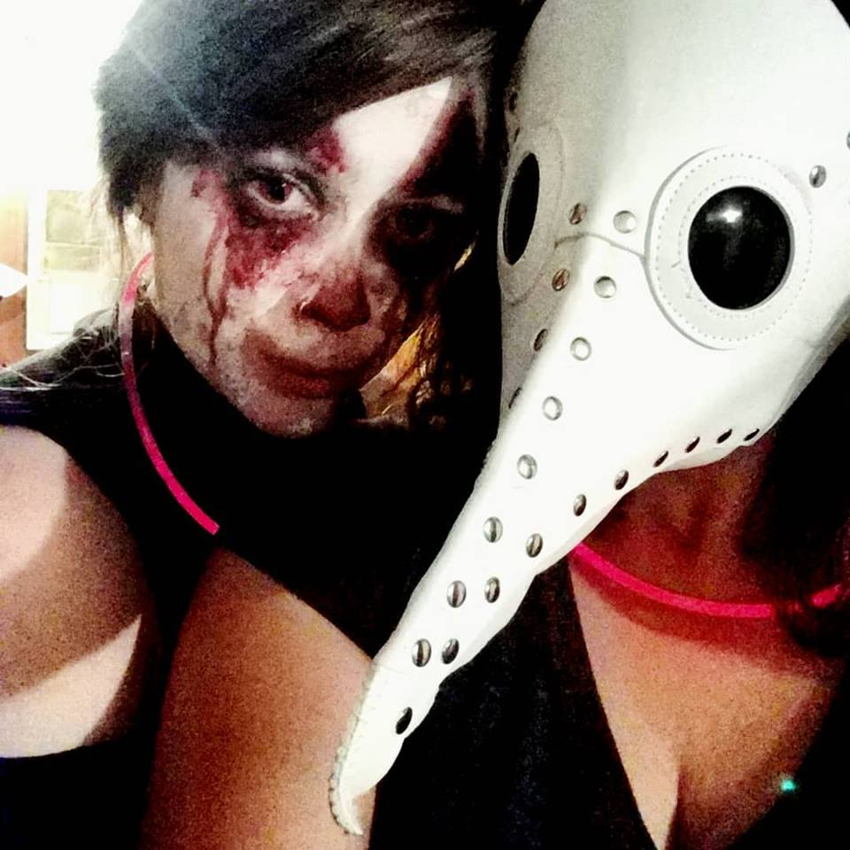
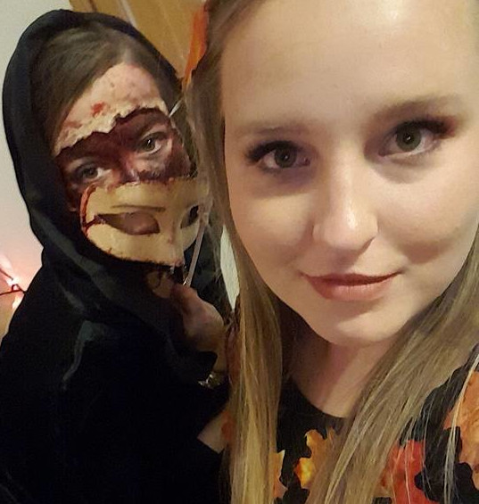

This site was created as both a supportive device of J-fer, gaming extradoinaire, and to provide practice in web development for the creater, her sister.
Gaming since childhood, J-fer gravitated towards first-person shooters on her PS4. What began as a few matches a night to blow off steam soon became a competative past time. Relishing her kill-death ratios, J-fer began snap chatting shots of her records. It was not long after this that her sister began to bed her to start streaming.
Since debuting on April 24th, 2019, it did not take J-fer long to climb the ranks of popular Twitch streamers. On her first night, having never streamed before, but drinking a Bud Light and filling the air with laughter, J-fer garnered an audiance of over 200 hundred viewers by the time she was finished.
Always interested in makeup and with a love for Haloween, J-fer was incredibly surprised at the opportunities to create things on her stream. Soon she was not only streaming killing-streaks, but theatrical horror and everyday make-up routines due to their popular demand.
 